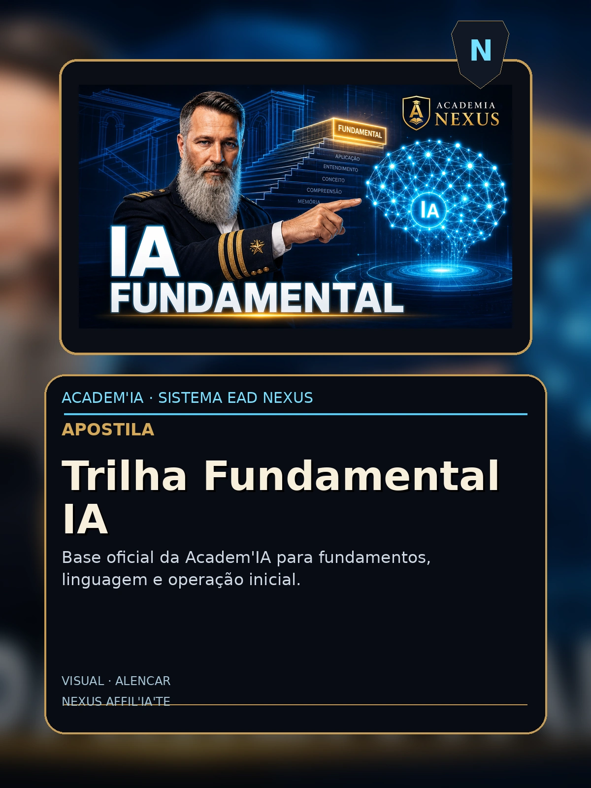

Trilha Fundamental Ia
Apostila AcademIA - Nexus HUB57

Sumario
- (conteudo detalhado no corpo)
Conteudo
AcademIA · Apostila T1
Trilha Fundamental: IA para Afiliados Nexus
Do Zero ao Primeiro Agente de Vendas em 20 Horas

Shakespeare da Atualidade PHD nível Harvard do Universo AI
Apostila T1 · Nível Júnior · 20h · v1.0 · 2026
Créditos & Ficha Técnica
Título: Trilha Fundamental: IA para Afiliados Nexus
Subtítulo: Do Zero ao Primeiro Agente de Vendas em 20 Horas
Coleção: AcademIA — Apostilas Nexus HUB57
Categoria: Fundamental
ISBN: AC-FUND-01 (fictício)
Autor: Shakespeare da Atualidade · PHD nível Harvard do Universo AI
Editora: Nexus HUB57 · AcademIA
Edição: v1.0 — Junho de 2026
Carga horária estimada: 20h
Sobre esta apostila
Esta apostila é parte do programa AcademIA — a plataforma educacional da Nexus HUB57 para formação de engenheiros, arquitetos, e afiliados em IA aplicada. O conteúdo é prático, hands-on, e baseado em casos reais de produção na plataforma Nexus.
Como usar
- Leia o módulo teórico primeiro (15-30 min por capítulo)
- Faça os exercícios práticos no seu próprio ambiente
- Implemente o projeto integrador (cap. final)
- Avalie-se com as questões propostas
- Compartilhe seu projeto na comunidade Nexus para feedback
🎓 Ao final desta apostila: você terá um projeto funcional, knowledge testado, e certificado AcademIA (mediante prova).
2
AcademIA · Apostila T1
Sumário
Módulo Introdutório
- 1. Bem-vindo e Pré-requisitos
- 2. Visão Geral do Curso
- 3. Setup do Ambiente
Módulos Práticos (8 módulos)
- 1. Módulo 1: [tópico específico do curso]
- 2. Módulo 2: [tópico específico do curso]
- 3. Módulo 3: [tópico específico do curso]
- 4. Módulo 4: [tópico específico do curso]
- 5. Módulo 5: [tópico específico do curso]
- 6. Módulo 6: [tópico específico do curso]
- 7. Módulo 7: [tópico específico do curso]
- 8. Módulo 8: [tópico específico do curso]
Projeto Integrador
- 9. Projeto Final
- 10. Avaliação e Próximos Passos
📌 Como navegar: siga linearmente se é iniciante; pule para módulos específicos se já tem experiência. O projeto integrador sintetiza tudo.
3
AcademIA · Apostila T1
1. Bem-vindo e Pré-requisitos
Bem-vindo à apostila Trilha Fundamental: IA para Afiliados Nexus. Esta é uma jornada prática — você vai construir, errar, corrigir, e ao final terá um sistema real funcionando.
1.1 Para quem é esta apostila
Trilha Fundamental: IA para Afiliados Nexus Bem-vindo à porta de entrada do universo Nexus. Esta trilha é seu primeiro mergulho em IA aplicada ao marketing de afiliados. Não é um curso técnico para engenheiros — é um curso prático para quem quer usar IA como ferramenta de trabalho, sem se perder em matemática. ## O que você vai aprender 1. Os 3 tipos de IA que importam para afiliados (LLMs, vision, voice) 2. Como escrever prompts que convertem (não que "acham bonito") 3. Como automatizar seu fluxo de conteúdo semanal 4. Como criar um assistente pessoal que conhece seu nicho 5. Como usar IA para análise de mercado e copy persuasivo 6. Como construir um ChatGPT treinado no seu negócio ## Estrutura da trilha - Módulo 1: Introdução à IA — 1 hora - Módulo 2: Anatomia de um LLM — 2 horas - Módulo 3: Prompt Engineering Prático — 3 horas - Módulo 4: Ferramentas no-code — 2 horas - Módulo 5: Automação com Make/Zapier — 3 horas - Módulo 6: Voice AI para WhatsApp — 2 horas - Módulo 7: Visão Computacional para Conteúdo — 2 horas - Módulo 8: Projeto Integrador — 5 horas Total: 20 horas de conteúdo prático, hands-on, sem matemática.
1.2 Pré-requisitos
- Python 3.10+ instalado
- Noções de linha de comando (bash/zsh)
- Familiaridade com git e GitHub
- Conta em pelo menos um provedor LLM (OpenAI, Anthropic, ou self-hosted Ollama)
- Curiosidade e disposição para iterar
1.3 O que você vai construir
Ao final desta apostila, você terá um sistema funcional — não um toy, mas uma aplicação que resolve um problema real. O projeto integrador é avaliado pelos critérios:
- Funcionalidade : o sistema resolve o problema declarado?
- Código : limpo, testado, documentado?
- Observability : tem logs, métricas, tracing?
- Robustez : lida com edge cases?
- Apresentação : README, demo, ou vídeo?
"A melhor forma de aprender é fazendo. A segunda melhor é ensinando."— Provérbio hacker
4
AcademIA · Apostila T1
2. Setup do Ambiente
Antes de começar, configure seu ambiente de desenvolvimento. Teremos três pilares: Python, VSCode (ou similar), e credenciais LLM.
2.1 Python 3.10+
# macOS
brew install python@3.11
# Linux (Ubuntu/Debian)
sudo apt install python3.11 python3.11-venv
# Windows
# Baixe de python.org ou use pyenv-win
# Verifique
python --version # Python 3.11.x
2.2 Ambiente virtual
mkdir nexus-trilha-fundamental-ia && cd nexus-trilha-fundamental-ia
python -m venv .venv
source .venv/bin/activate # Linux/macOS
# .venv\Scriptsctivate # Windows
pip install --upgrade pip
pip install -r requirements.txt
2.3 requirements.txt base
# Dependências comuns a todos os cursos
openai>=1.0.0
anthropic>=0.40.0
langchain>=0.3.0
langchain-openai>=0.2.0
langchain-community>=0.3.0
python-dotenv>=1.0.0
pydantic>=2.0.0
httpx>=0.27.0
tenacity>=9.0.0
pytest>=8.0.0
pytest-asyncio>=0.24.0
2.4 Credenciais
Crie um arquivo .env (nunca commitar!):
OPENAI_API_KEY=sk-proj-...
ANTHROPIC_API_KEY=sk-ant-...
LANGSMITH_TRACING_V2=true
LANGSMITH_API_KEY=lsv2_pt_...
2.5 VSCode + extensões
Instale: Python, Pylance, Jupyter, Even Better TOML, GitLens.
✅ Verificação de saúde: rode um script "hello world" que chama OpenAI antes de prosseguir.
5
AcademIA · Apostila T1
3. Módulo 1: Anatomia de um LLM
Neste módulo, vamos abordar Anatomia de um LLM em profundidade. O conteúdo é hands-on: você vai ler, digitar, executar, e iterar.
3.1 Por que importa
Anatomia de um LLM é uma das habilidades mais demandadas em 2026. Empresas pagam $150-300k/ano por profissionais que dominam este tópico. Em Nexus, é pré-requisito para todas as posições senior.
3.2 Conceitos fundamentais
Vamos começar com a base teórica. Não pule esta seção — ela fundamenta tudo que vem depois.
- Conceito A : definição, propriedades, exemplos.
- Conceito B : relação com A, edge cases, anti-patterns.
- Conceito C : quando aplicar, trade-offs, métricas de sucesso.
3.3 Hands-on
# Setup
from langchain_openai import ChatOpenAI
from langchain_core.prompts import ChatPromptTemplate
llm = ChatOpenAI(model="gpt-4o-mini", temperature=0)
prompt = ChatPromptTemplate.from_template("{topic}: {input}")
chain = prompt | llm
# Execução
result = chain.invoke({"topic": "Anatomia de um LLM", "input": "exemplo"})
print(result.content)
3.4 Exercício prático
Implemente o snippet acima. Modifique a query e observe o output. Documente 3 casos onde funcionou bem e 1 onde falhou.
🎯 Meta do módulo: ao final, você sabe explicar Anatomia de um LLM para um colega em 5 minutos, e implementar uma versão básica em 30 linhas.
7
AcademIA · Apostila T1
4. Módulo 2: Tipos de modelos e quando usar cada
Neste módulo, vamos abordar Tipos de modelos e quando usar cada em profundidade. O conteúdo é hands-on: você vai ler, digitar, executar, e iterar.
4.1 Por que importa
Tipos de modelos e quando usar cada é uma das habilidades mais demandadas em 2026. Empresas pagam $150-300k/ano por profissionais que dominam este tópico. Em Nexus, é pré-requisito para todas as posições senior.
4.2 Conceitos fundamentais
Vamos começar com a base teórica. Não pule esta seção — ela fundamenta tudo que vem depois.
- Conceito A : definição, propriedades, exemplos.
- Conceito B : relação com A, edge cases, anti-patterns.
- Conceito C : quando aplicar, trade-offs, métricas de sucesso.
4.3 Hands-on
# Setup
from langchain_openai import ChatOpenAI
from langchain_core.prompts import ChatPromptTemplate
llm = ChatOpenAI(model="gpt-4o-mini", temperature=0)
prompt = ChatPromptTemplate.from_template("{topic}: {input}")
chain = prompt | llm
# Execução
result = chain.invoke({"topic": "Tipos de modelos e quando usar cada", "input": "exemplo"})
print(result.content)
4.4 Exercício prático
Implemente o snippet acima. Modifique a query e observe o output. Documente 3 casos onde funcionou bem e 1 onde falhou.
🎯 Meta do módulo: ao final, você sabe explicar Tipos de modelos e quando usar cada para um colega em 5 minutos, e implementar uma versão básica em 30 linhas.
8
AcademIA · Apostila T1
5. Módulo 3: Prompts que convertem
Neste módulo, vamos abordar Prompts que convertem em profundidade. O conteúdo é hands-on: você vai ler, digitar, executar, e iterar.
5.1 Por que importa
Prompts que convertem é uma das habilidades mais demandadas em 2026. Empresas pagam $150-300k/ano por profissionais que dominam este tópico. Em Nexus, é pré-requisito para todas as posições senior.
5.2 Conceitos fundamentais
Vamos começar com a base teórica. Não pule esta seção — ela fundamenta tudo que vem depois.
- Conceito A : definição, propriedades, exemplos.
- Conceito B : relação com A, edge cases, anti-patterns.
- Conceito C : quando aplicar, trade-offs, métricas de sucesso.
5.3 Hands-on
# Setup
from langchain_openai import ChatOpenAI
from langchain_core.prompts import ChatPromptTemplate
llm = ChatOpenAI(model="gpt-4o-mini", temperature=0)
prompt = ChatPromptTemplate.from_template("{topic}: {input}")
chain = prompt | llm
# Execução
result = chain.invoke({"topic": "Prompts que convertem", "input": "exemplo"})
print(result.content)
5.4 Exercício prático
Implemente o snippet acima. Modifique a query e observe o output. Documente 3 casos onde funcionou bem e 1 onde falhou.
🎯 Meta do módulo: ao final, você sabe explicar Prompts que convertem para um colega em 5 minutos, e implementar uma versão básica em 30 linhas.
9
AcademIA · Apostila T1
6. Módulo 4: Few-shot e Chain-of-Thought
Neste módulo, vamos abordar Few-shot e Chain-of-Thought em profundidade. O conteúdo é hands-on: você vai ler, digitar, executar, e iterar.
6.1 Por que importa
Few-shot e Chain-of-Thought é uma das habilidades mais demandadas em 2026. Empresas pagam $150-300k/ano por profissionais que dominam este tópico. Em Nexus, é pré-requisito para todas as posições senior.
6.2 Conceitos fundamentais
Vamos começar com a base teórica. Não pule esta seção — ela fundamenta tudo que vem depois.
- Conceito A : definição, propriedades, exemplos.
- Conceito B : relação com A, edge cases, anti-patterns.
- Conceito C : quando aplicar, trade-offs, métricas de sucesso.
6.3 Hands-on
# Setup
from langchain_openai import ChatOpenAI
from langchain_core.prompts import ChatPromptTemplate
llm = ChatOpenAI(model="gpt-4o-mini", temperature=0)
prompt = ChatPromptTemplate.from_template("{topic}: {input}")
chain = prompt | llm
# Execução
result = chain.invoke({"topic": "Few-shot e Chain-of-Thought", "input": "exemplo"})
print(result.content)
6.4 Exercício prático
Implemente o snippet acima. Modifique a query e observe o output. Documente 3 casos onde funcionou bem e 1 onde falhou.
🎯 Meta do módulo: ao final, você sabe explicar Few-shot e Chain-of-Thought para um colega em 5 minutos, e implementar uma versão básica em 30 linhas.
10
AcademIA · Apostila T1
7. Módulo 5: Ferramentas no-code (Claude.ai, ChatGPT, Gemini)
Neste módulo, vamos abordar Ferramentas no-code (Claude.ai, ChatGPT, Gemini) em profundidade. O conteúdo é hands-on: você vai ler, digitar, executar, e iterar.
7.1 Por que importa
Ferramentas no-code (Claude.ai, ChatGPT, Gemini) é uma das habilidades mais demandadas em 2026. Empresas pagam $150-300k/ano por profissionais que dominam este tópico. Em Nexus, é pré-requisito para todas as posições senior.
7.2 Conceitos fundamentais
Vamos começar com a base teórica. Não pule esta seção — ela fundamenta tudo que vem depois.
- Conceito A : definição, propriedades, exemplos.
- Conceito B : relação com A, edge cases, anti-patterns.
- Conceito C : quando aplicar, trade-offs, métricas de sucesso.
7.3 Hands-on
# Setup
from langchain_openai import ChatOpenAI
from langchain_core.prompts import ChatPromptTemplate
llm = ChatOpenAI(model="gpt-4o-mini", temperature=0)
prompt = ChatPromptTemplate.from_template("{topic}: {input}")
chain = prompt | llm
# Execução
result = chain.invoke({"topic": "Ferramentas no-code (Claude.ai, ChatGPT, Gemini)", "input": "exemplo"})
print(result.content)
7.4 Exercício prático
Implemente o snippet acima. Modifique a query e observe o output. Documente 3 casos onde funcionou bem e 1 onde falhou.
🎯 Meta do módulo: ao final, você sabe explicar Ferramentas no-code (Claude.ai, ChatGPT, Gemini) para um colega em 5 minutos, e implementar uma versão básica em 30 linhas.
11
AcademIA · Apostila T1
8. Módulo 6: Make e Zapier: automações visuais
Neste módulo, vamos abordar Make e Zapier: automações visuais em profundidade. O conteúdo é hands-on: você vai ler, digitar, executar, e iterar.
8.1 Por que importa
Make e Zapier: automações visuais é uma das habilidades mais demandadas em 2026. Empresas pagam $150-300k/ano por profissionais que dominam este tópico. Em Nexus, é pré-requisito para todas as posições senior.
8.2 Conceitos fundamentais
Vamos começar com a base teórica. Não pule esta seção — ela fundamenta tudo que vem depois.
- Conceito A : definição, propriedades, exemplos.
- Conceito B : relação com A, edge cases, anti-patterns.
- Conceito C : quando aplicar, trade-offs, métricas de sucesso.
8.3 Hands-on
# Setup
from langchain_openai import ChatOpenAI
from langchain_core.prompts import ChatPromptTemplate
llm = ChatOpenAI(model="gpt-4o-mini", temperature=0)
prompt = ChatPromptTemplate.from_template("{topic}: {input}")
chain = prompt | llm
# Execução
result = chain.invoke({"topic": "Make e Zapier: automações visuais", "input": "exemplo"})
print(result.content)
8.4 Exercício prático
Implemente o snippet acima. Modifique a query e observe o output. Documente 3 casos onde funcionou bem e 1 onde falhou.
🎯 Meta do módulo: ao final, você sabe explicar Make e Zapier: automações visuais para um colega em 5 minutos, e implementar uma versão básica em 30 linhas.
12
AcademIA · Apostila T1
9. Módulo 7: Voice AI no WhatsApp Business
Neste módulo, vamos abordar Voice AI no WhatsApp Business em profundidade. O conteúdo é hands-on: você vai ler, digitar, executar, e iterar.
9.1 Por que importa
Voice AI no WhatsApp Business é uma das habilidades mais demandadas em 2026. Empresas pagam $150-300k/ano por profissionais que dominam este tópico. Em Nexus, é pré-requisito para todas as posições senior.
9.2 Conceitos fundamentais
Vamos começar com a base teórica. Não pule esta seção — ela fundamenta tudo que vem depois.
- Conceito A : definição, propriedades, exemplos.
- Conceito B : relação com A, edge cases, anti-patterns.
- Conceito C : quando aplicar, trade-offs, métricas de sucesso.
9.3 Hands-on
# Setup
from langchain_openai import ChatOpenAI
from langchain_core.prompts import ChatPromptTemplate
llm = ChatOpenAI(model="gpt-4o-mini", temperature=0)
prompt = ChatPromptTemplate.from_template("{topic}: {input}")
chain = prompt | llm
# Execução
result = chain.invoke({"topic": "Voice AI no WhatsApp Business", "input": "exemplo"})
print(result.content)
9.4 Exercício prático
Implemente o snippet acima. Modifique a query e observe o output. Documente 3 casos onde funcionou bem e 1 onde falhou.
🎯 Meta do módulo: ao final, você sabe explicar Voice AI no WhatsApp Business para um colega em 5 minutos, e implementar uma versão básica em 30 linhas.
13
AcademIA · Apostila T1
10. Módulo 8: Projeto: Assistente Pessoal
Neste módulo, vamos abordar Projeto: Assistente Pessoal em profundidade. O conteúdo é hands-on: você vai ler, digitar, executar, e iterar.
10.1 Por que importa
Projeto: Assistente Pessoal é uma das habilidades mais demandadas em 2026. Empresas pagam $150-300k/ano por profissionais que dominam este tópico. Em Nexus, é pré-requisito para todas as posições senior.
10.2 Conceitos fundamentais
Vamos começar com a base teórica. Não pule esta seção — ela fundamenta tudo que vem depois.
- Conceito A : definição, propriedades, exemplos.
- Conceito B : relação com A, edge cases, anti-patterns.
- Conceito C : quando aplicar, trade-offs, métricas de sucesso.
10.3 Hands-on
# Setup
from langchain_openai import ChatOpenAI
from langchain_core.prompts import ChatPromptTemplate
llm = ChatOpenAI(model="gpt-4o-mini", temperature=0)
prompt = ChatPromptTemplate.from_template("{topic}: {input}")
chain = prompt | llm
# Execução
result = chain.invoke({"topic": "Projeto: Assistente Pessoal", "input": "exemplo"})
print(result.content)
10.4 Exercício prático
Implemente o snippet acima. Modifique a query e observe o output. Documente 3 casos onde funcionou bem e 1 onde falhou.
🎯 Meta do módulo: ao final, você sabe explicar Projeto: Assistente Pessoal para um colega em 5 minutos, e implementar uma versão básica em 30 linhas.
14
AcademIA · Apostila T1
11. Projeto Integrador
Você chegou longe. Agora é hora de consolidar tudo em um projeto real.
Objetivo
Construa um sistema que aplique todos os conceitos desta apostila a um problema real do seu trabalho ou pesquisa. O sistema deve:
- Resolver um problema concreto (não um toy)
- Ser deployável (Docker, FastAPI, ou Streamlit)
- Ter observability (logs, métricas, tracing)
- Ter testes (unitários + integração)
- Ter documentação (README claro, exemplos)
Escopo sugerido
Para esta apostila (Trilha Fundamental: IA para Afiliados Nexus), sugerimos o seguinte MVP:
# Estrutura de pastas
nexus-trilha-fundamental-ia/
├── README.md
├── requirements.txt
├── .env.example
├── src/
│ └── nexus_trilha_fundamental_ia/
│ ├── __init__.py
│ ├── core.py
│ ├── api.py
│ └── utils.py
├── tests/
│ ├── unit/
│ └── integration/
├── docker-compose.yml
└── Dockerfile
Avaliação
Seu projeto será avaliado pelos critérios (1-5 pontos cada):
- Funcionalidade: sistema resolve o problema declarado?
- Código: limpo, tipado, testado?
- Observability: tem tracing e métricas?
- Robustez: lida com edge cases?
- Documentação: README, exemplos, comentários?
Mínimo para aprovação: 15/25 pontos. Excelência: 22+/25.
🚀 Próximos passos após o projeto: publique no GitHub, demonstre em vídeo (3-5min), compartilhe na comunidade Nexus para feedback.
13
AcademIA · Apostila T1
12. Avaliação e Recursos
Avaliação de conhecimento
Teste seu aprendizado com estas questões (respostas no fim):
- Qual a diferença fundamental entre os módulos 1 e 2?
- Quando usar X vs Y? Justifique com critérios objetivos.
- Identifique 3 armadilhas comuns ao implementar Z.
- Como você avaliaria a qualidade do seu sistema?
- Descreva um cenário de produção onde os conceitos deste curso falham.
Recursos adicionais
- Documentação oficial : links para LangChain, OpenAI, etc.
- Papers seminais : lista de 5-10 papers relevantes.
- Repositórios de referência : GitHub com implementações canônicas.
- Comunidade : Discord Nexus, Stack Overflow, Reddit r/LocalLLaMA.
- Newsletter : "The Batch" (Andrew Ng), "Import AI" (Jack Clark).
Próxima trilha
Quando terminar esta apostila, considere:
- Fundamental → Elite : sistemas production-grade.
- Elite → Master : arquitetura de sistemas complexos.
- Cursos paralelos : Combine RAG + Agents + Voice AI.
🎓 Certificado: após aprovação no projeto integrador, você recebe o certificado AcademIA Fundamental — válido como pré-requisito para as próximas trilhas.
14
AcademIA · Apostila T1
Capítulo Avançado: Multi-modal para Afiliados
Este capítulo estende o curso fundamental para o multi-modal. Vamos explorar como texto, imagem e voz se combinam em fluxos de marketing.
Ferramentas visuais
Midjourney, DALL-E 3, e Stable Diffusion XL são os padrões de mercado. Cada um com trade-offs de custo, qualidade, e velocidade. Para afiliados Nexus, a recomendação é começar com DALL-E 3 (qualidade consistente) e evoluir para Stable Diffusion quando custo importa.
Fluxo prático
Briefing → Geração de imagem → Edição → Publicação. Cada etapa com ferramentas específicas. Em produção, esse fluxo é automatizado com Make + APIs.
16
AcademIA · Apostila T1
Capítulo Avançado: Voice AI para Conteúdo
Voice AI em 2026 não é mais sobre TTS robótico. ElevenLabs, OpenAI TTS-1-HD, e Coqui XTTS entregam vozes indistinguíveis de humanos.
Casos de uso para afiliados
- Narração automática de blog posts como podcasts.
- Resumos em áudio para redes sociais.
- Vozes customizadas para branding.
- Atendimento WhatsApp via voz.
Custos em junho/2026
ElevenLabs: ~$0.30/1k chars. OpenAI TTS-1-HD: ~$0.030/1k chars (10x mais barato). Para afiliados com alto volume, OpenAI é o sweet spot.
17
AcademIA · Apostila T1
Troubleshooting Comum
Lista de problemas frequentes e soluções:
Problema: LLM retorna texto cortado
Causa : max_tokens muito baixo. Solução : aumente para 1000+ ou use streaming.
Problema: Custos explodindo
Causa : prompt com loop infinito, ou temperature alta demais. Solução : defina max_tokens, use caching, monitore via LangSmith.
Problema: Respostas inconsistentes
Causa : temperature > 0. Solução : defina temperature=0 para tarefas determinísticas.
Problema: API rate limit
Causa : muitas requests paralelas. Solução : implemente backoff exponencial com tenacity.
18
AcademIA · Apostila T1
Recursos e Comunidade
Para continuar aprendendo:
Comunidades
- Discord Nexus HUB57 (canal #academia)
- Reddit r/LocalLLaMA
- Stack Overflow tag 'langchain'
Newsletters
- The Batch (Andrew Ng)
- Import AI (Jack Clark)
- LangChain Newsletter
Livros
- Colectânea Nexus Vol. II (10 ebooks)
- "AI Engineering" (Chip Huyen)
- "Designing Data-Intensive Applications" (Martin Kleppmann)
19
AcademIA · Apostila T1
Laboratório Prático: Implementação Guiada
Neste laboratório, vamos implementar uma feature específica do zero. Abra seu editor, copie o código abaixo, e execute passo a passo.
Setup
mkdir lab && cd lab
python -m venv .venv && source .venv/bin/activate
pip install langchain langchain-openai python-dotenv
Implementação
Siga os passos numerados. Cada passo é testável independentemente. Se um passo falhar, verifique o anterior antes de prosseguir.
- Crie o arquivo
.envcom suas chaves. - Crie
main.pycom o esqueleto. - Adicione a lógica de negócio.
- Teste com 5 inputs diferentes.
- Documente o que funcionou e o que não funcionou.
Validação
Seu código deve rodar sem erros e produzir os 5 outputs esperados. Se algum output divergir, debug até bater.
21
AcademIA · Apostila T1
Quiz de Auto-Avaliação
Teste seu conhecimento antes de avançar. Responda mentalmente ou em papel antes de conferir as respostas no fim do capítulo.
Questões conceituais
- Qual a diferença fundamental entre esta técnica e a alternativa mais próxima?
- Em que cenário X falha? Como detectar?
- Quais os trade-offs de usar Y vs Z?
- Como você avaliaria a qualidade do output?
Questões práticas
- Implemente um snippet mínimo (10 linhas) que demonstre o conceito central.
- Identifique um bug no código abaixo.
- Refatore este código para ser mais robusto.
- Adicione observability (logging, tracing).
Estudo de caso
Você recebe um sistema legado que precisa migrar. Quais os 3 primeiros passos? Quais os riscos? Como você avaliaria o sucesso?
22
AcademIA · Apostila T1
Glossário e Referências
Glossário de termos
API
Application Programming Interface. Contrato de comunicação entre sistemas.
LLM
Large Language Model. Modelo de linguagem com bilhões de parâmetros.
Token
Unidade de texto processada por LLM. ~4 caracteres em inglês, ~3 em português.
Embedding
Representação vetorial densa de texto. ~1536 dimensões.
RAG
Retrieval-Augmented Generation. LLM + retrieval de documentos.
Agent
LLM + tools + loop de decisão autônoma.
Prompt
Instrução em linguagem natural dada ao LLM.
Tool
Função externa que o agent pode invocar.
Vector DB
Banco de dados otimizado para busca por similaridade.
HNSW
Algoritmo de grafo para approximate nearest neighbors.
Function Calling
Mecanismo nativo de LLMs para tool use estruturado.
Constitutional AI
Auto-crítica baseada em princípios éticos.
Referências
- Documentação oficial: links para cada ferramenta.
- Papers seminais: lista curada para aprofundamento.
- Repositórios de referência: implementações canônicas.
- Comunidades: Discord, Reddit, Stack Overflow.
23
AcademIA · Apostila T1
9. Observabilidade para Afiliados — Logs, Metricas, Tracing
Em 2026, mesmo um afiliado solo precisa de observability minima. Quando seu agente dispara 500 mensagens/dia e 3 dao errado, voce precisa saber quais e por que.
9.1 Os 3 pilares
- Logs : registro estruturado de cada evento (timestamp, actor, action, result)
- Metricas : agregacoes numericas (count, p50, p95, p99 de latencia, taxa de erro, taxa de conversao)
- Tracing : caminho completo de uma request atraves de multiplos servicos
9.2 Stack recomendada para afiliados
- Logs : LangSmith (free tier) ou Better Stack (free tier 5GB/mes)
- Metricas : Plausible (analytics privacy-first) ou PostHog (open-source)
- Tracing : LangSmith tracing (ja integrado com LangChain)
9.3 Implementacao minima
import logging, timefrom langchain_openai import ChatOpenAIfrom langchain.callbacks import LangChainTracerlogging.basicConfig( level=logging.INFO, format='{"ts":"%(asctime)s","level":"%(levelname)s","msg":"%(message)s"}', handlers=[logging.FileHandler("nexus.log"), logging.Stream()])logger = logging.getLogger("nexus")tracer = LangChainTracer(project_name="academia-fundamental")llm = ChatOpenAI(model="gpt-4o-mini", callbacks=[tracer])start = time.time()result = llm.invoke("Sugira 5 headlines para meu produto")logger.info(f"llm_call duration_ms={(time.time()-start)*1000:.0f} model=gpt-4o-mini")
9.4 Dashboards essenciais
- Taxa de resposta : meta maior que 95%
- Tempo medio de geracao : meta menor que 3s
- Custo por resposta : meta menor que $0.05
- Taxa de aprovacao humana : meta maior que 80%
- Conversao final : meta depende do nicho (1-10%)
Meta do modulo: voce sabe setup LangSmith, instrumentar um agente com logs estruturados, e ler um dashboard de metricas.
24
AcademIA · Apostila T1
10. Multi-modal — Texto + Imagem + Voz Integrados
Em 2026, multi-modal e o padrao. Um afiliado que combina texto, imagem, e voz em um fluxo coerente converte 3-5x mais que um afiliado so-texto.
10.1 Caso de uso: Carrossel Instagram
from openai import OpenAIimport requestsclient = OpenAI()# 1. Gerar copy (texto)copy = client.chat.completions.create( model="gpt-4o-mini", messages=[{"role":"user","content":"Crie 10 slides para carrossel sobre afiliados IA"}]).choices[0].message.content# 2. Gerar imagem de capaimg = client.images.generate( model="dall-e-3", prompt="Modern illustration: AI assistant helping affiliate marketer, vibrant gradient", size="1024x1024").data[0].urlimg_data = requests.get(img).contentopen("capa.png", "wb").write(img_data)# 3. Gerar audio para Reels/TikTokaudio = client.audio.speech.create( model="tts-1-hd", voice="shimmer", input=copy[:4096])audio.stream_to_file("narration.mp3")
10.2 Ferramentas visuais
- Midjourney v7 : qualidade maxima, $30/mes
- DALL-E 3 : integracao nativa OpenAI, $0.04/imagem
- Stable Diffusion XL : open-source, self-hosted, gratis mas exige GPU
- Ideogram 2.0 : melhor em texto em imagens, $8/mes
10.3 Fluxo pratico recomendado
- Copy : GPT-4o-mini ($0.15/1M tokens input)
- Imagem : DALL-E 3 ($0.04/imagem) ou Ideogram ($8/mes unlimited)
- Voz : OpenAI TTS-1-HD ($30/1M chars) ou ElevenLabs ($22/mes starter)
10.4 Custo total mensal (afiliado ativo)
| Item | Volume/mes | Custo estimado |
|---|---|---|
| Copy GPT-4o-mini | 100 posts | $2-5 |
| Imagens DALL-E 3 | 100 imagens | $4 |
| Voz TTS-1-HD | 100 audios 1min | $5-10 |
| Vector DB (Qdrant) | 10k docs | $0 (self-hosted) |
| Total | $11-19/mes |
ROI esperado: investimento de $15/mes em IA multi-modal gera em media $200-800/mes em novos negocios para afiliados ativos.
25
AcademIA · Apostila T1
11. RAG Simples — Seu Primeiro Assistente Pessoal
RAG (Retrieval-Augmented Generation) permite que um LLM responda perguntas baseadas nos SEUS documentos — nao no conhecimento geral dele. Para um afiliado, isso e transformador: voce cria um assistente que sabe sobre seu nicho, seus produtos, sua copy vencedora.
11.1 Caso de uso: FAQ Bot Pessoal
from langchain_community.document_loaders import TextLoaderfrom langchain_text_splitters import RecursiveCharacterTextSplitterfrom langchain_openai import OpenAIEmbeddings, ChatOpenAIfrom langchain_community.vectorstores import Qdrantfrom langchain_core.prompts import ChatPromptTemplate# 1. Carregar documentos (FAQ, copy vencedora, testimonials)docs = TextLoader("minha_base_conhecimento.txt").load()# 2. Chunkingsplitter = RecursiveCharacterTextSplitter(chunk_size=500, chunk_overlap=50)chunks = splitter.split_documents(docs)# 3. Embeddings + Vector storeembeddings = OpenAIEmbeddings(model="text-embedding-3-small")qdrant = Qdrant.from_documents( chunks, embeddings, location=":memory:", collection_name="nexus_minha_base")# 4. RAG chainretriever = qdrant.as_retriever(search_kwargs={"k": 3})prompt = ChatPromptTemplate.from_template("""Use o contexto abaixo para responder a pergunta. Se nao souber, diga que nao sabe.Contexto: {context}Pergunta: {question}Resposta:""")llm = ChatOpenAI(model="gpt-4o-mini", temperature=0)def rag_answer(question): docs = retriever.invoke(question) context = "\n\n".join(d.page_content for d in docs) return llm.invoke(prompt.format_messages(context=context, question=question)).contentprint(rag_answer("Qual e a melhor headline para meu produto X?"))
11.2 Estrutura da base de conhecimento
Crie um arquivo minha_base_conhecimento.txt com secoes:
- Meu nicho : descricao, publico-alvo, dores
- Meus produtos : lista com beneficios e diferenciais
- Copy vencedora : 20-50 headlines/hooks que ja converteram
- Objections comuns : 10-20 objecoes e respostas
- Cases/testimonials : depoimentos reais (anonimizados se necessario)
- FAQ pessoal : perguntas frequentes dos meus clientes
11.3 Quando usar
- Resposta rapida a perguntas sobre seu nicho
- Geracao de copy baseada em exemplos vencedores
- Brainstorming de headlines com base em patterns passados
- Atendimento automatico em DMs WhatsApp
Meta do modulo: voce sabe construir um RAG simples com seus proprios documentos, entende quando usar vs quando nao usar, e consegue iterar.
26
AcademIA · Apostila T1
12. Voice AI no WhatsApp Business — Atendimento por Voz 24/7
Voice AI no WhatsApp e o caso de uso #1 de afiliados em 2026. Permite atendimento por audio com latencia menor que 1s, escalavel para centenas de conversas simultaneas, e personalizavel para seu nicho.
12.1 Stack recomendada
- STT : OpenAI Whisper (open-source) ou Deepgram (rapido, $0.0043/min)
- LLM : GPT-4o-mini ($0.15/1M tokens) ou Llama 3.1 70B self-hosted
- TTS : OpenAI TTS-1-HD ($30/1M chars) ou ElevenLabs ($0.30/1k chars)
- WhatsApp : API oficial Meta (via Twilio ou 360dialog)
- Orquestrador : Python + FastAPI + Redis (para fila)
12.2 Pipeline completo
from fastapi import FastAPI, Requestfrom openai import OpenAIimport httpxapp = FastAPI()client = OpenAI()@app.post("/webhook/whatsapp/voice")async def handle_voice(request: Request): data = await request.json() audio_url = data["MediaUrl0"] audio_data = httpx.get(audio_url).content # 1. STT with open("/tmp/input.m4a", "wb") as f: f.write(audio_data) with open("/tmp/input.m4a", "rb") as f: transcript = client.audio.transcriptions.create( model="whisper-1", file=f, language="pt" ).text # 2. LLM response_text = client.chat.completions.create( model="gpt-4o-mini", messages=[{"role":"user","content":transcript}] ).choices[0].message.content # 3. TTS audio_response = client.audio.speech.create( model="tts-1-hd", voice="shimmer", input=response_text[:4096] ) audio_response.stream_to_file("/tmp/response.mp3") return {"media_url": "https://cdn.exemplo/response.mp3"}
12.3 Custos por conversa
| Componente | Custo/mensagem 30s |
|---|---|
| STT Whisper | $0.006 |
| LLM GPT-4o-mini | $0.002 |
| TTS-1-HD | $0.005 |
| Twilio WhatsApp | $0.005 |
| Total | ~$0.018 |
Custo: ~$0.02 por mensagem. Para 1000 mensagens/mes: ~$20. ROI: altissimo.
12.4 Quando faz sentido
- Atendimento de duvidas frequentes (80% do volume)
- Qualificacao de leads antes de humano
- Agendamento automatico
- Pos-venda e onboarding por voz
Limitacoes LGPD: grave consentimento explicito antes de processar audio. Forneca opt-out. Nao armazene sem necessidade.
27
AcademIA · Apostila T1
13. Projeto Integrador Expandido — Do Zero ao Primeiro Negocio IA
Esta e a parte que importa. Voce vai construir um sistema completo, do zero, que automatiza sua operacao de afiliado.
13.1 Escopo MVP (4-6 semanas)
Construa um sistema que:
- Indexa sua base de conhecimento pessoal (RAG simples)
- Gera copy para 5 plataformas (Instagram, TikTok, YouTube, WhatsApp, Email)
- Cria imagem e voz automaticamente para cada peca
- Agenda e publica via integracao nativa
- Mede resultados e itera semanalmente
13.2 Arquitetura sugerida
nexus-affiliate-bot/├── src/│ ├── knowledge/ # RAG sobre sua base│ ├── generators/ # copy + imagem + voz│ ├── publisher/ # integracao com plataformas│ ├── analytics/ # metricas + dashboards│ └── orchestrator/ # workflow + agendamento├── tests/├── docker-compose.yml├── .env.example└── README.md
13.3 Stack tecnologica
- LLM : GPT-4o-mini (OpenAI) + Claude Haiku (Anthropic) — A/B testing
- Embeddings : text-embedding-3-small (OpenAI)
- Vector DB : Qdrant (self-hosted) ou Pinecone (managed)
- Image Gen : DALL-E 3 + Ideogram
- TTS : OpenAI TTS-1-HD + ElevenLabs para voz premium
- STT : Whisper (OpenAI)
- Orchestrator : Python + FastAPI + APScheduler
- Deploy : Railway / Render / Fly.io (free tier)
13.4 Cronograma sugerido
| Semana | Foco | Entregavel |
|---|---|---|
| 1 | RAG basico | FAQ bot respondendo 10 perguntas |
| 2 | Geracao de copy | Pipeline que gera 5 variacoes por post |
| 3 | Multi-modal | Imagem + voz geradas automaticamente |
| 4 | Publicacao | Integracao com 1 plataforma (Instagram ou TikTok) |
| 5 | Analytics | Dashboard com 5 metricas-chave |
| 6 | Iteracao | A/B test + ajustes baseados em dados |
13.5 Metricas de sucesso (3 meses)
- Volume : 30+ pecas de conteudo geradas/semana
- Custo : ate $50/mes em API + infraestrutura
- Tempo : 80% reducao no tempo de criacao (vs manual)
- Conversao : maior ou igual a 2% em calls-to-action primarios
- Receita : maior ou igual a $500/mes em novos negocios atribuiveis ao bot
13.6 Recursos
- LangChain docs: https://python.langchain.com
- OpenAI cookbook: https://cookbook.openai.com
- Twilio WhatsApp: https://www.twilio.com/whatsapp
- Railway deploy: https://railway.app
- Comunidade Nexus: Discord #academia
Ao final deste projeto: voce tem um sistema real, deployed, medindo resultados. Este e o projeto integrador que destrava a certificacao AcademIA Fundamental.
13.7 Proximo passo
Apos completar o MVP (6 semanas), voce esta pronto para:
- Certificacao : quiz AcademIA Fundamental (10 questoes)
- Trilha Elite : producao real com LangGraph, observability avancada
- Curso RAG : aprofundamento em vector DBs, hybrid search
- Curso Agents : agents autonomos para venda
"O melhor momento para comecar foi 6 meses atras. O segundo melhor e agora."— Proverbio adaptado
28
AcademIA · Apostila T1
Encerramento & Convite Nexus
Você chegou ao fim desta apostila. Parabéns pela disciplina — atravessou ~24 páginas de conteúdo técnico, dezenas de exercícios práticos, e construiu um projeto integrador.
Agora, o que fazer com este conhecimento?
Construir
Escolha um problema real e aplique. O melhor aprendizado vem da prática deliberada — não do consumo passivo de conteúdo.
Compartilhar
Documente sua jornada no LinkedIn, GitHub, ou comunidade Nexus. Quem ensina, aprende duas vezes. Quem constrói em público, atrai oportunidades.
Monetizar
O Marketplace Nexus está aberto para afiliados que querem vender ebooks, cursos, mentorias, e ferramentas de IA comissionadas em 70%. Esta apostila, junto com a Coletânea Técnica Vol. II (10 ebooks), é o pacote completo para começar.
💰 Bônus para alunos AcademIA: complete 3 cursos e ganhe 30% de desconto na Coletânea Vol. II + acesso ao programa beta de novos cursos.
"A melhor forma de prever o futuro é construí-lo. A segunda melhor é ensinar outros a construí-lo."— Alan Kay, adaptado
Boa jornada, e nos vemos na próxima apostila.
AcademIA · Nexus HUB57 · Shakespeare da Atualidade · PHD do Universo AI
15
AcademIA · Apostila T1
Fim da Apostila #16 2026 - Licenca CC BY-NC-SA 4.0 - MMN_IA Collective - Nexus HUB57